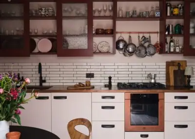

Metal table tops are an effortless way to provide a practical surface while making a statement. Aged copper and aged brass table tops provide a unique look you won’t get anywhere else. Natural copper and brass provide a timeless appeal you won’t want to ignore.
Whatever finish you go for, metal table tops from Halman Thompson deliver the quality and character you’re looking for.
CUT TO SIZE
CHOOSE A FINISH
Select your finish and order by the size you need for your project.


READY TO GO
We can provide completed table tops with each of our finishes being wrapped around wood and lacquer finished.
Please use the Request a quote form below
Metal Table Top Finishes
You will see our metal table tops in restaurants, cafes, bars, bistros, salons, homes and anywhere people want to make a statement with something you can use every day.
We create all metal table tops by hand, to order. We use your exact specifications to deliver the colour and finish you’re looking for, in the shape and size you need.
Contact Halman Thompson for a free, bespoke metal table top quotation or use the form below!
You can have your bespoke metal tabletop in a number of finishes, including:
- Ayrshire finish – Lustrous aged copper finish with a mottled verdigris patina that really engages
- Cheshire finish –Deep aged copper finish with areas of light and dark copper tones that change in the light
- Hertfordshire finish – Amazing aged copper finish with variations of verdigris throughout the piece
- Northumberland finish – Hypnotic swirls of aged copper and verdigris that reveals more every time you look
- Natural copper finish – Timeless and welcoming natural copper finish that delivers a warmth no other metal can compete with
- Somerset finish – Intriguing aged brass finish with patterns of dark and light that would look good in any space
- Wiltshire finish – Easy going aged brass finish with a dappled patina that changes tone depending on where you look
- Cambridgeshire finish – Grainy aged brass finish that provides the beauty of brass with more character
- Natural brass finish – Light natural brass finish with a timeless appear that’s genuinely hard to match
Handmade metal tabletops
Each of our metal tabletops are made by hand, to order. We design and create your table top to meet your specific needs.
Our artisans artificially age copper or brass finishes until it meets your requirements. Ageing is then stopped and the tabletop is sealed in tough, transparent lacquer. That lacquer both stops the ageing process and protects the tabletop.
Natural brass and copper table tops can be left as bare metal or protected by the same lacquer for protection.
Caring for metal table tops
All aged metal table tops are very easy to install and maintain.
We can provide the table top as a sheet shaped to your specifications or attach them to a table for you.
Maintenance is simple. Use a soft cloth and warm soapy water to remove dirt and debris. That’s all there is to it.
All table tops come with full care instructions.
Contact the Halman Thompson team for a free, personalised quotation!
Whatever finish you go for, metal table tops from Halman Thompson deliver the quality and character you’re looking for.
Projects

Aged Copper Custom Table Top for Kitchen Island
Copper , Interiors , Kitchens , Table Tops , Worktops
Aged Copper Counter Top and Matching Splashback
Copper , Copper Splashbacks , Interiors , Kitchens , Table Tops , Worktops

Berkshire Bronzed Brass Countertop for Cheltenham Showroom
Brass , Interiors , Table Tops , Worktops

Aged Copper Worktop for Kate Watson-Smyth
Copper , Interiors , Kitchens , Living Rooms , Worktops
Inspiration

8 Navy and Copper Kitchen Ideas
Copper , DIY , Interiors , Kitchen
A navy and copper kitchen is a timeless combination that blends deep, rich tones with warm metallic accents. Whether you're planning a full kitchen renovation or looking for small upgrades, this colour scheme is a stylish choice that exudes sophistication. Why Choose...

10 Grey and Copper Kitchen Ideas for an Elegant Home Makeover
Copper , DIY , Interiors , Kitchen
Grey and copper is a combination that exudes warmth, style, and sophistication. With its neutral, calm base and the warm, striking tones of copper, this pairing brings both subtlety and drama to your kitchen space. Whether you’re revamping an existing layout or...
10 Splashback Ideas to Transform Your Kitchen
DIY , Interiors , Kitchen
A kitchen splashback can be much more than just a practical solution for keeping walls clean while cooking; it can be an opportunity to inject character, colour, and texture into the heart of your home. Whether you’re aiming for a sleek modern style or a cosy rustic...
CHOOSE A FINISH
Select your finish and order by the size you need for your project.
- Antique Brass £186.00
- Antique Brushed Brass £186.00
- Antique Brushed Copper £24.00
- Antique Burnished Copper £105.60
- Ayrshire finish – with specs of verdigris £186.00
- Berkshire Bronzed Brass £186.00
- Brushed Copper £105.60
- Cambridgeshire Brushed brass £148.80
- Cheshire finish – Aged copper £148.80
- Hertfordshire Finish – Aged Copper £132.00
- Lightly Burnished Copper £105.60
- Natural Brass £105.60
If you can dream it, we will create it.
In addition to our brass and copper finishes, our team of artisan designers and craftsmen are ready to project into reality.
We work with a variety of woods and metals to create bars, tables, balustrades, staircases, worktops, and much more.


If you can dream it, we’ll make it.
Bars, balustrades, staircases, worktops, cladding and pieces that don’t have a name yet. Our designers and craftspeople work in brass, copper, zinc and steel, and alongside wood.